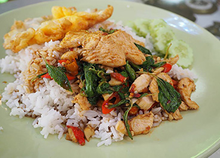
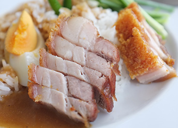
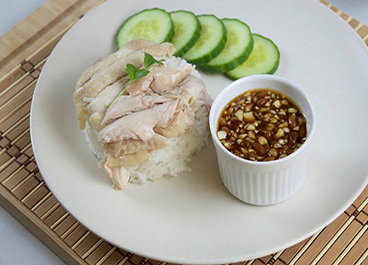
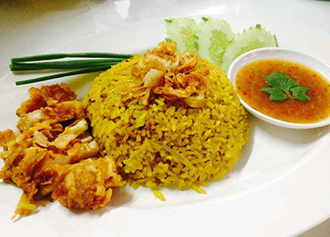
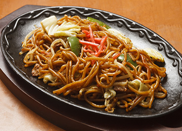
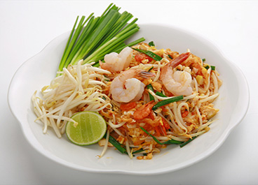
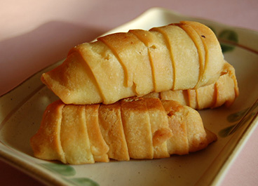
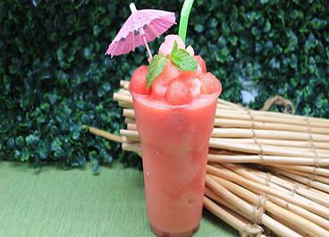
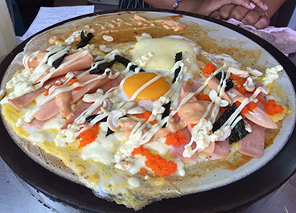

More Website Templates @ TemplateMonster.com - July 30, 2014!

จานนี้เป็นอาหารจานเดียวที่พบมากใน
ประเทศไทยหากคุณไม่ทราบว่าจะทานอะไร
ในประเทศไทยคุณสามารถลองอาหารนี้ได้
ทุกที่ในร้านอาหารไทย โดยปกติเนื้อสัตว์
ที่ใช้ในจานนี้จะเป็นเนื้อหมูสับหรือไก่สับ
แต่คุณสามารถเปลี่ยนไปเป็นอาหารที่
คุณชอบรวมทั้งอาหารทะเลหรือ
ผักด้วยเช่นกัน

หมูย่างกรอบเป็นอาหารยอดนิยมใน
ประเทศไทยจะไปได้ดีกับข้าวสวยก๋วยเตี๋ยว (กับซอสเปรี้ยวหวานและเปรี้ยว)

เป็นอาหารคาวของไทยและจีน คาดว่าอาหารชนิดนี้ได้รับการเผยแพร่มา
จากชาวจีน หรือไหหลำหรือไห่หนาน มีให้รับประทานกันทั่วทุกภาคในประเทศไทย และนิยมกันมากในหมู่ชาวไทยเชื้อสายจีน นอกจากนี้ยังนิยมรับประทานกันมากใน
มาเลเซียและสิงคโปร์อีกด้วย และยังติดอันดับเป็นหนึ่งใน 15 เมนูอาหารต่างชาติที่
ชาวญี่ปุ่นชื่นชอบอีกด้วย

เป็นอาหารที่เป็นเอกลักษณ์อย่างหนึ่งใน
ตะวันออกกลางรวมทั้งชาวมุสลิมใน
ประเทศต่างๆ ต้นกำเนิดของข้าวหมกมา
จากอินเดียซึ่งรับวัฒนธรรมการปรุง
ข้าวหมกไปจากเปอร์เซียได้พัฒนามา
เป็นบิรยานี

ยากิ หมายถึง การปิ้ง ย่าง หรือ ผัด โซบะ หมายถึง อาหารประเภทเส้นก๋วยเตี๋ยว หรือ บะหมี่ เพราะฉะนั้น ยากิโซบะ หมายถึง เส้นผัดๆ ทอดๆ
ยากิโซบะ (Yaki soba )
เป็นหนึ่งในอาหารญี่ปุ่นที่ทำทานได้ง่าย วิธีการไม่ยุ่งยาก แถมรสชาดนั้นถูกปากคนไทยด้วย

ผัดไทยโดยทั่วไปจะนำเส้นเล็กมาผัดด้วยไฟ
แรงกับไข่ ใบกุยช่ายสับ ถั่วงอก หัวไชโป๊สับ เต้าหู้เหลือง ถั่วลิสงคั่ว และกุ้งแห้ง ปรุงรสด้วยพริก น้ำปลา และน้ำตาล เสิร์ฟพร้อมกับมะนาว ใบกุยช่าย ถั่วงอกสด และหัวปลีเป็นเครื่องเคียง

อาหารว่างของชาวอินโดนีเซียและมลายู
ชนิดหนึ่ง เป็นกล้วยทอดในน้ำมันเดือด โดยชุบกับแป้งคล้ายกับกล้วยแขกหรือ
กล้วยทอดของไทย ต่างกันเพียงไม่ใส่มะพร้าวและงา และทอดทั้งลูกไม่ได้ฝานบางอย่างกล้วยแขก ปีซังโกเร็งจัดเป็นอาหารที่หารับประทานง่าย
และมีราคาถูก สามารถหาซื้อได้ตามข้างถนนหรือตาม
รถเข็นต่าง ๆ โดยเป็นส่วนหนึ่งของโกเรงัน (gorengan) คือ อาหารประเภทชุบแป้งทอดกับน้ำมันเดือด ๆ ในวัฒนธรรมอาหารอย่างอินโดนีเซีย

เครื่องดื่มที่ทำจากผลไม้ดิบหรือผักสดผสม
กับส่วนผสมอื่น ๆ เช่นน้ำเย็นหรือสารให้ความหวาน เหมาะสำหรับการกำจัดความกระหาย
ในช่วงฤดูร้อน

แพนเค้ก (อังกฤษ: Pancake) เป็นขนมปังแผ่นแบนชนิดหนึ่งทำจาก แป้งนวดเปียก (batter) ซึ่งเป็นแป้งที่ผสมกับ ของเหลว เช่น น้ำ หรือนม และโดยมากแป้งนวดเปียกจะมีไข่เป็น
ส่วนผสมอยู่ด้วย แพนเค้กมีความหวานเล็กน้อย และ ถูกทำให้สุกด้วยการหยอด
ลงในกระทะแบนร้อน
 |
| 
{kind=link}
{kind=link}
{kind=link}
{kind=link}
{kind=link}
{kind=link}
{kind=link}
{kind=link}
{kind=link}